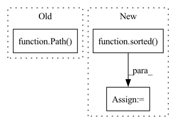

Pattern ID :17856
Before Change
data = []
for data_dir in data_dirs:
data_dir_path = Path( data_dir)
speaker_dirs = [x for x in data_dir_path.iterdir() if x.is_dir()]
for speaker_dir in speaker_dirs:
audio_paths = find_files(speaker_dir)After Change
clean_data_dir = Path(clean_data_dir)
noisy_data_dir = Path(noisy_data_dir)
// spkers
speakers = sorted( os.listdir(clean_data_dir))
speakers_ = sorted(os.listdir(noisy_data_dir))
assert speakers == speakers_
// add dataIn pattern: SUPERPATTERN
Frequency: 3
Non-data size: 3
Instances Fragment ID: 58568575
Project Name: ga642381/robust-vc
Commit Name: 638fa4eef5ca5f86314fd13883cd9521ef92db58
Time: 2021-09-15
Author: ga642381@gmail.com
File Name: S2VC/S2VC-robust/data/preprocess_dataset.py
M Class Name: PreprocessDataset
N Class Name: PreprocessDataset
M Method Name: __init__(5)
N Method Name: __init__(4)
M Parent Class: torch.utils.data.Dataset
N Parent Class: torch.utils.data.Dataset
M File Name: S2VC/S2VC-robust/data/preprocess_dataset.py
N File Name: S2VC/S2VC-robust/data/preprocess_dataset.py
M Start Line: 24
M End Line: 37
N Start Line: 20
N End Line: 46
Before Change
all_fps = [train_rgbs, val_rgbs, test_rgbs]
// prepare and execute file copying
out_path = Path( "data") .absolute() / "synpick_vid_{}".format(int(time.time()))
out_path.mkdir(parents=True)
all_out_paths = [(out_path / "train" / "rgb"), (out_path / "val" / "rgb"), (out_path / "test" / "rgb")]
copy_imgs(all_fps, all_out_paths)After Change
// get all training image FPs for rgb
rgbs = sorted(train_path.glob("*/rgb/*.jpg"))
segs = sorted( train_path.glob("*/class_index_masks/*.png"))
num_ep = int(Path(rgbs[-1]).parent.parent.stem) + 1
train_eps = [i for i in range(num_ep)]
random.shuffle(train_eps) Fragment ID: 58568584
Project Name: ais-bonn/vp-suite
Commit Name: ee1627faf59f835bdcd0693752c2eeb413c5c02c
Time: 2021-07-22
Author: boltres@ais.uni-bonn.de
File Name: scripts/prepare_synpick.py
M Class Name: AnonimousClass
N Class Name: AnonimousClass
M Method Name: prepare_synpick_vid(1)
N Method Name: prepare_synpick_vid(1)
M Parent Class:
N Parent Class:
M File Name: scripts/prepare_synpick.py
N File Name: scripts/prepare_synpick.py
M Start Line: 65
M End Line: 90
N Start Line: 54
N End Line: 82
Before Change
for supported_extension in SUPPORTED_EXTENSIONS:
files.extend(
glob.glob(
str(Path( path) / "**" / ("*" + supported_extension)), recursive=True
)
)
After Change
file_paths = []
for root, dirs, filenames in os.walk(root_path):
filenames = sorted( filenames)
for filename in filenames:
input_path = os.path.abspath(root)
file_path = os.path.join(input_path, filename)
Fragment ID: 58568580
Project Name: asteroid-team/torch-audiomentations
Commit Name: 01f1436481c3b8f67a30caf7e0578a183044ef0f
Time: 2020-12-04
Author: ij@aiascience.com
File Name: torch_audiomentations/utils/file.py
M Class Name: AnonimousClass
N Class Name: AnonimousClass
M Method Name: find_audio_files(3)
N Method Name: find_audio_files(1)
M Parent Class:
N Parent Class:
M File Name: torch_audiomentations/utils/file.py
N File Name: torch_audiomentations/utils/file.py
M Start Line: 11
M End Line: 20
N Start Line: 12
N End Line: 31